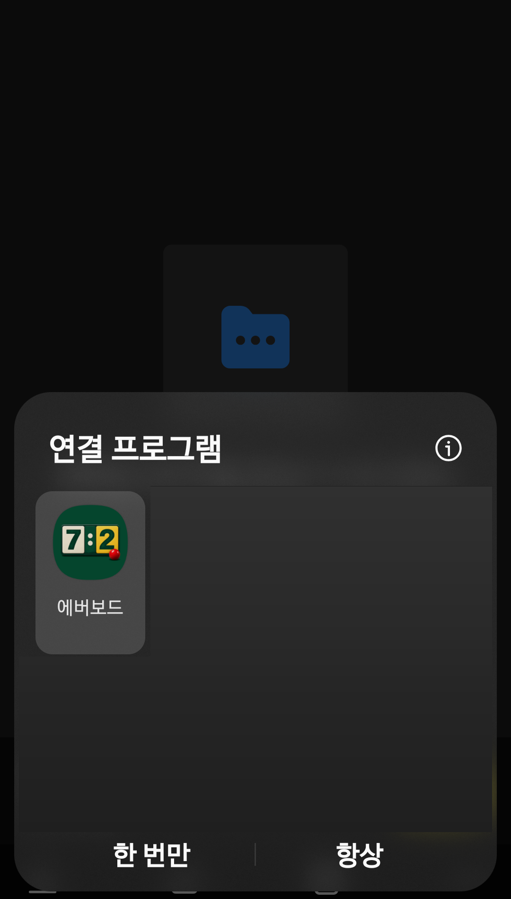
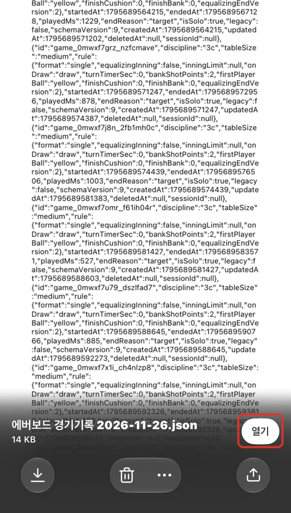
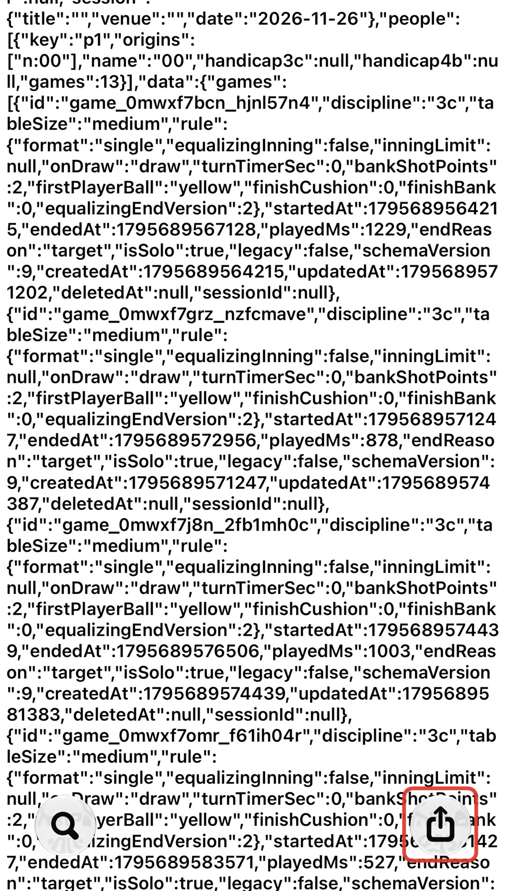
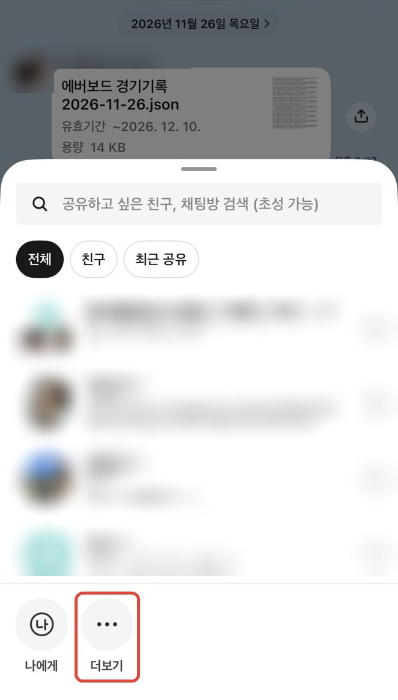

단톡방에 올라온 에버보드 경기기록 파일을 눌러 에버보드로 넘기면, 그 기록이 내 폰에 담기고 내 에버리지에 잡힙니다. 휴대폰마다 누르는 곳이 조금 다르니 아래에서 내 폰의 순서를 따라 하세요.
에버보드가 아직 없다면 먼저 설치하세요. 설치한 뒤 단톡방으로 돌아와 같은 파일을 다시 누르면 됩니다.
안드로이드 — 파일 · 열기 · 에버보드
- 단톡방의 파일을 누릅니다. 파일 화면이 뜨면 아래 노란 열기를 누릅니다.
- 연결 프로그램에서 에버보드를 누르고 한 번만을 누릅니다.
- 에버보드가 열리며 경기 받기 창이 뜹니다. 이 중에 누가 나인가요에서 내 이름을 짚고 내 경기 N판 담기를 누릅니다.



휴대폰마다 화면 모양이 조금 다를 수 있습니다. 연결 프로그램 목록에는 에버보드 말고 다른 앱도 함께 보입니다.
아이폰 — 파일 · 열기 · 공유 · 에버보드
- 단톡방의 파일을 누릅니다. 글자가 가득한 화면이 떠도 정상입니다. 오른쪽의 열기를 누릅니다.
- 열린 화면 오른쪽 아래 공유 버튼(네모에서 화살표가 위로 나가는 모양)을 누릅니다.
- 뜨는 목록의 앱 줄에서 에버보드를 누릅니다. 안 보이면 앱 줄을 왼쪽으로 밀어 끝의 더 보기에서 찾으세요.
- 에버보드가 열리며 경기 받기 창이 뜹니다. 내 이름을 짚고 담기를 누릅니다.



카톡의 공유 버튼을 눌렀다면
파일 옆이나 파일 화면 아래의 공유 버튼은 카톡의 친구·채팅방 목록을 먼저 띄웁니다. 여기서 친구를 고르면 파일이 그 사람에게 가니, 고르지 말고 맨 아래 더보기를 누르세요. 3번과 같은 목록이 나옵니다.

이럴 땐 이렇게
아이폰에서 파일을 눌렀더니 알 수 없는 글자만 가득해요.
정상입니다. 아이폰은 기록 파일의 속 내용을 글자로 먼저 보여 줍니다. 그 화면에서 열기 → 오른쪽 아래 공유 버튼 → 에버보드를 누르면 됩니다. 아이폰 순서 보기
아이폰에서 공유를 눌렀더니 친구 목록이 떠요.
카톡의 공유 버튼을 누른 것입니다. 친구를 고르면 파일이 그 사람에게 가니, 고르지 말고 맨 아래 더보기를 누르세요. 에버보드가 있는 목록이 나옵니다. 사진으로 보기
아이폰 공유 목록에 에버보드가 안 보여요.
앱 줄을 왼쪽으로 밀어 끝의 더 보기를 누르면 설치된 앱이 모두 나옵니다. 거기서 에버보드를 누르세요. 그래도 없으면 에버보드를 설치하거나 업데이트한 뒤 다시 해 보세요.
안드로이드 「연결 프로그램」에 에버보드가 없어요.
에버보드가 설치되어 있지 않거나 오래된 버전일 수 있습니다. 설치·업데이트한 뒤 파일을 다시 누르세요. 그래도 없으면 파일을 폰에 저장한 뒤, 에버보드 기록 탭 오른쪽 위 경기 받기 → 파일에서 고르기로 그 파일을 고르세요.
에버보드는 열렸는데 경기 받기 창이 안 떠요.
경기를 치는 중이면 점수판을 가리지 않도록 기다렸다가, 경기 화면에서 나오면 뜹니다. 다른 경기 받기 창이 열려 있으면 그 창을 먼저 마치세요. 그래도 안 뜨면 앱을 최신 버전으로 업데이트해 주세요.
파일의 유효기간이 지나 열리지 않아요.
카톡 파일은 내려받을 수 있는 기간이 정해져 있고, 말풍선에 유효기간이 적혀 있습니다. 기간이 지났다면 보낸 분께 다시 올려 달라고 하세요. 옆에 있다면 QR로 바로 받을 수도 있습니다. QR로 주고받기
담기 창의 이름이 내 폰에 적힌 이름과 달라요.
괜찮습니다. 이 중에 누가 나인가요에서 보낸 폰에 적힌 내 이름을 짚으면 내 회원과 이어지고, 다음부터는 이름이 달라도 저절로 이어집니다. 이름 맞추기
같은 파일을 두 번 눌렀어요.
괜찮습니다. 같은 경기는 한 번만 들어옵니다. 단톡방의 파일을 각자 편할 때 받으면 됩니다.
안드로이드에서 「항상」을 눌렀더니 다른 파일도 에버보드로 열려요.
「항상」은 같은 종류의 파일(JSON)을 늘 에버보드로 열게 합니다. 되돌리려면 휴대폰 설정 → 애플리케이션 → 에버보드에서 「기본값으로 설정」(기종에 따라 「기본으로 열기」)을 지우세요. 평소에는 한 번만을 권합니다.
보내는 분께 — 이 주소를 단톡방에
처음 받는 분이 있다면 파일과 함께 이 페이지 주소를 단톡방에 올려 주세요. 공지로 고정해 두면 다음 모임부터는 따로 설명하지 않아도 됩니다.
https://lds77.github.io/billiards/everboard/kakao.html
파일은 기록 탭에서 모임의 기록 보내기 → 파일로 보내기로 올립니다. 기록 보내기 안내